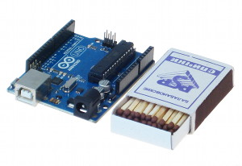
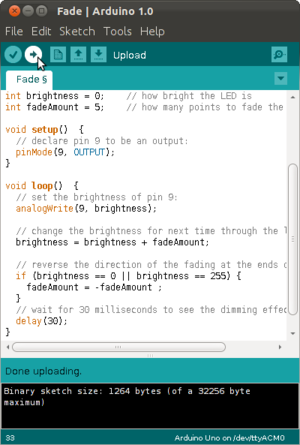
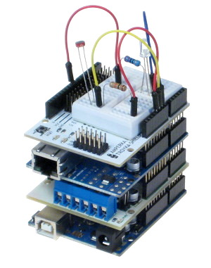

Arduino — это небольшая плата с собственным процессором и памятью.
На плате также есть пара десятков контактов,
к которым можно подключать всевозможные компоненты:
лампочки, датчики, моторы, чайники,
роутеры, магнитные дверные замки и вообще всё, что работает от электричества.
В процессор Arduino можно загрузить программу,
которая будет управлять всеми этими устройствами по заданному алгоритму.
Таким образом можно создать бесконечное количество уникальных классных гаджетов,
сделанных своими руками и по собственной задумке.
Чтобы понять общую идею, взгляните на иллюстрацию.
Она не отражает и миллионной доли всех возможностей,
но всё же даёт первичное представление.
Сложно ли это?

Свою бешеную популярность Arduino приобрела благодаря простоте и дружелюбности.
Даже полный ноль в программировании и схемотехнике может освоить основы работы с Arduino за пару часов.
Этому поспособствуют тысячи публикаций, учебников, заметок в интернете и отличная серия видеоуроков по Arduino на русском языке.
Arduino IDEПрограммы для Arduino пишутся на обычном C++, дополненным простыми и понятными функциями для управления вводом-выводом на контактах.
Если вы уже знаете C++ — Arduino станет дверью в новый мир, где программы не ограничены рамками компьютера, а взаимодействуют с окружающим миром и влияют на него.
Если же вы новичок в программировании — не проблема, вы с лёгкостью научитесь, это просто.
Для удобной работы с платами Ардуино существует бесплатная официальная среда программирования Arduino IDE, работающая под Windows, Mac OS и Linux.
С помощью неё загрузка новой программы в контроллер становится делом одного клика, только лишь подключите плату к компьютеру через USB. Хотя для более пытливых умов возможна работа и через Visual Studio, Eclipse, другие IDE или командную строку,
а новичкам подойдёт визуальная среда программирования XOD IDE.
Вам не понадобится паяльник. Полноценные устройства можно собирать, используя специальную макетную доску, перемычки и провода абсолютно без пайки.
Конструирование ещё не было таким быстрым и простым.
Принцип бутерброда

<Ещё одной отличительной особенностью Arduino является наличие плат расширения, так называемых shields или просто «шилдов».
Это дополнительные платы, которые ставятся подобно слоям бутерброда поверх ардуинки, чтобы дать ей новые возможности.
Например, существуют платы расширения для подключения к локальной сети и интернету (Ethernet Shield),
для управления мощными моторами (Motor Shield), для получения координат и времени со спутников GPS (приёмник GPS/ГЛОНАСС) и многие другие./p1>